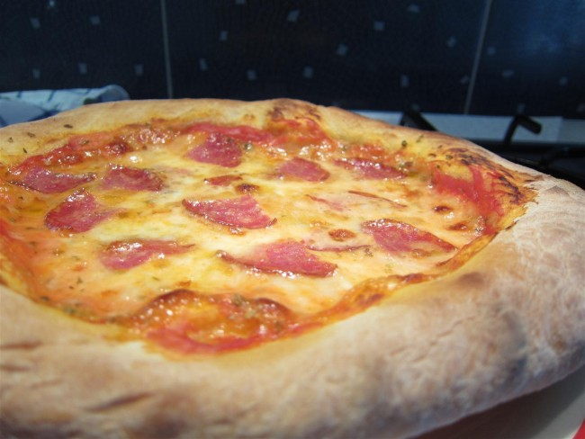

A pizza sütése
A pizza sütése otthon, hagyományos sütőben nem igényel különösebb tudományt, csak néhány fontos alapelv betartását, na meg persze kiváló minőségű pizzatésztát és szószt. Természetesen ha van egy kemencéd valahol a kertben, akkor fűtsd be és dobd be a pizzát, igazán tökéletes csak abban lesz. De ahogy az átlagos olasz háztartásokban sem mindennapos, úgy nekem sincs és valószínűleg az olvasóim többségének sincs ilyen, ezért én a hagyományos sütőben sütés módszerét mutatom be. És sok helyen olvasni róla, hogy lehetetlen, mégis szinte tökéletes, a legjobb pizzériákban kaphatóhoz hasonló pizzát lehet sütni otthon, hagyományos sütőben is.

Mire kell figyelni?
- Először is a pizza sütése során is tényleg nagyon fontos, hogy megfelelő legyen az alapanyag. A tészta, a szósz és a feltétek, az utóbbi kettőnél elsősorban arra gondolok, hogy ne áztassák el a pizzát.
- A sütőd legyen olyan forró, amennyire csak lehet. Ez általában 250-300 fok, és még így is jócskán alatta van annak, amit Nápolyban a fatüzelésű kemencében sütött pizzához előírnak, vagyis a 485 fokhoz. Egyszerűen tekerd olyan magasra, amennyire csak lehet.
- Várd meg, amíg teljesen bemelegszik a sütőd, csak akkor tedd bele az első pizzát. Ez kb. fél óráig is eltarthat a nagyon magas hőmérséklet miatt.
- Pizzalapon vagy tepsiben a sütő alsó részében süsd a pizzát. Pizza kő esetén ez természetes.
- Egyszerre csak egy pizzát süss.
- Nálam elektromos sütőnél az vált be, hogy amikor beteszem a pizzát, akkor rákapcsolom a légkeverést kb. 2 percig, amíg a pizza pereme felemelkedik. Aztán lekapcsolom a légkeverést, alsó-felső sütésre állítom, úgy hagyom tovább sülni. A sütés utolsó 2 percében ismét visszateszem légkeverésre, hogy a pereme megkapja a jellegzetes, drappos-barnás színt.
- Ha nincs légkeverésed az sem baj (a kemencében sincs), egyszerűen használd a legmagasabb fokozatot akár gáz, akár elektromos a sütőd. Ha az alsó és felső sütés változtatható, akkor mindenképpen az alsó-felsőt egyben válaszd, ez hasonlít leginkább a kemencére.
- A sütési idő függ a sütő hőfokától és a pizza méretétől. 250 fokon kb. 15 perc alatt sül meg egy 35 cm-es pizza. Nálam kb. 300 fokig lehet tekerni, úgy 8-10 perc is elég. Fele adag tésztából készült, 25 cm-es pizza kb. 2 perccel gyorsabban kész van. Tehát a sütési időt nem lehet így interneten keresztül megmondani, ezt néhány pizza után ki fogod tapasztalni. Akkor van kész, ha elolvadt rajta a sajt, és szép barnára sült a széle.
- Igazán jó a pizza csak akkor lesz, ha a tészta is megfelelő, és a pizza sütése során nem ázik el a sok szósztól vagy a mozzarellából távozó víztől. Mivel vétek nem a hagyományos mozzarellával sütni, ezért néha mégis túl sok lesz a nedvesség rajta. Ezen javítani úgy tudsz valamennyit, ha sütés közben néha kinyitod a sütő ajtaját 5-10 másodpercre (ha van légkeverésed, közben az is menjen), hogy a mozzarellából felszabaduló gőz távozni tudjon. Ez nem tökéletes megoldás, és bár a kicsit elázott pizza is finom, mégsem az igazi. Egyszerűen tegyél rá legközelebb kevesebb sajtot, illetve próbálj meg más márkájút használni. Én azt tapasztaltam, hogy az itthon kaphatók közül a Szarvasi Mozzarella sül a legtökéletesebben.
Ha a pizza sütése során ezeket a tanácsokat betartod, szinte ugyanolyan pizzát tudsz otthon, hagyományos sütőben készíteni, mint a legjobb pizzériákban. Persze a faszéntüzelésű kemence jellegzetes íze elmarad, de ígérem, hogy nem lesz nagy a különbség!